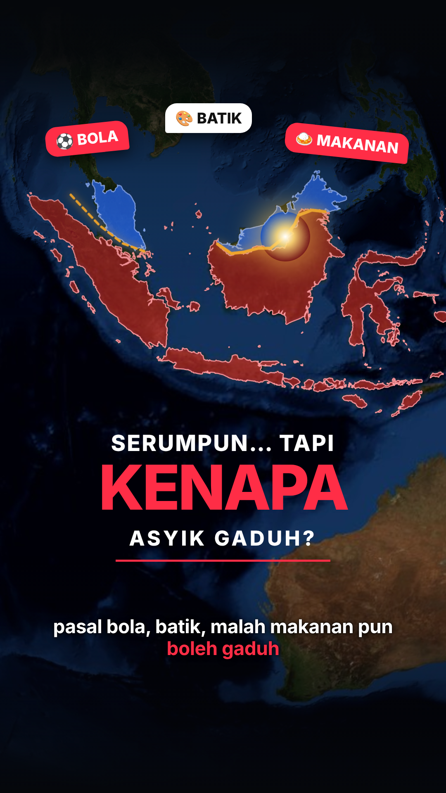
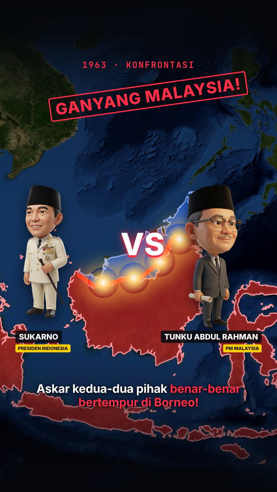
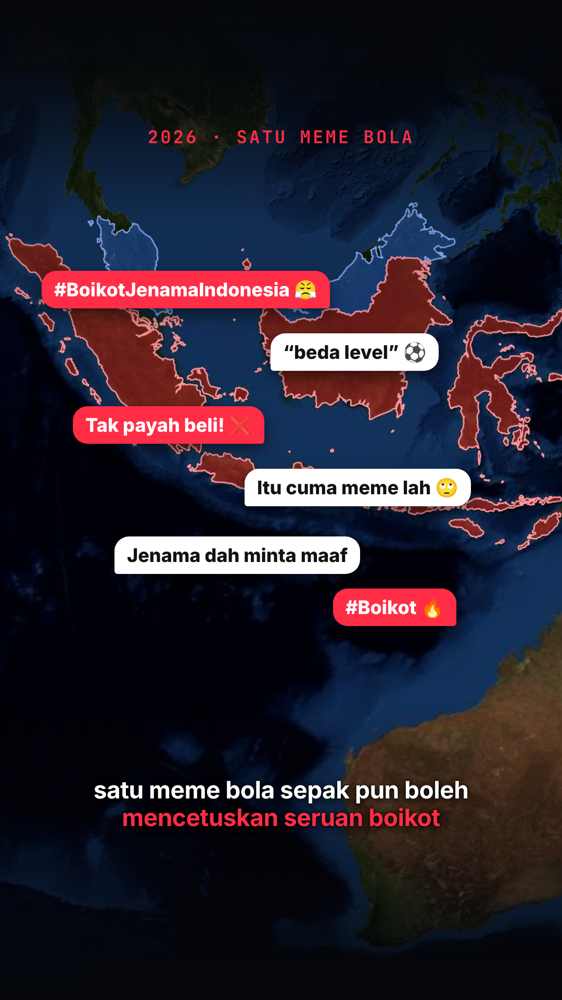
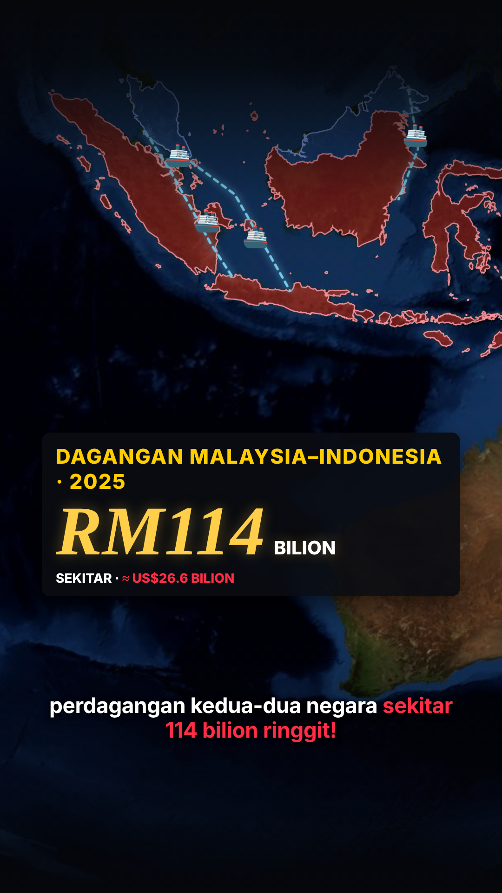
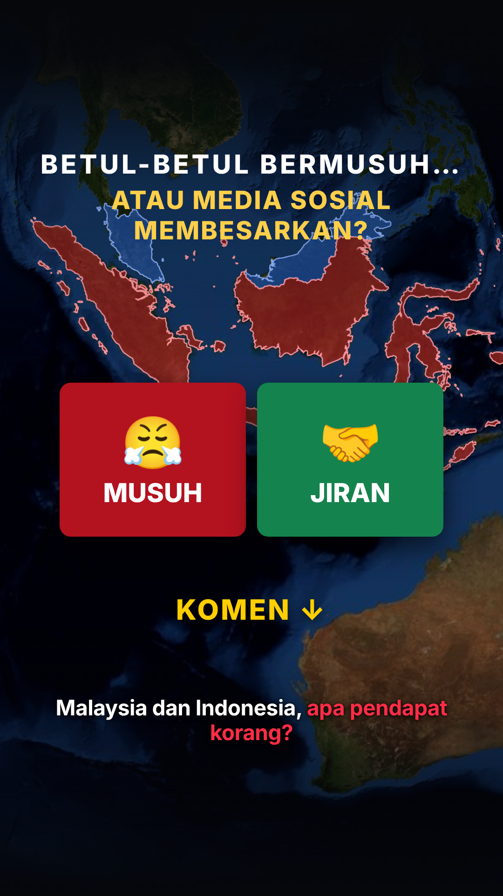

GAYA MAP ANIMATION · 1080×1920 · ~80 s · skrip pengguna · MY biru vs ID merah, retak bercahaya · karikatur Sukarno & Tunku di babak 1963 · subtitle jalur bawah

01 · 0:00
Hook
"Malaysia dengan Indonesia ni pelik… pasal bola, batik, makanan pun boleh gaduh."
MY biru vs ID merah, sempadan Borneo retak bercahaya. Chip ⚽ BOLA · 🎨 BATIK · 🍛 MAKANAN terbang berlaga. Tajuk KENAPA ASYIK GADUH?

02 · 0:08
1963 · Konfrontasi
"Sukarno menentang pembentukan Malaysia… Ganyang Malaysia!… bertempur di Borneo!"
Zoom Borneo, sempadan menyala merah, letupan kecil berkelip. Sukarno VS Tunku jatuh masuk, cop GANYANG MALAYSIA!
"Pendet dari Bali… 'Enigmatic Malaysia'… rupanya Discovery Channel!"
Anak panah emas Bali → Malaysia. Kad berita 2009, highlight. Cop DISUNTING DISCOVERY CHANNEL.

07 · 0:59
2026 · Boikot
"Satu meme bola… seruan boikot di Malaysia."
Belon komen #Boikot & "beda level" muncul bertubi-tubi dari dua arah. Nama jenama tidak dipapar.

08 · 1:06
Dagangan
"…perdagangan 2025 sekitar 114 BILION ringgit!"
Laluan kapal bercahaya antara dua negara, 🚢 bergerak. Kad RM114 BILION mengira naik.

09 · 1:11
Ending · undian
"Betul-betul bermusuh… atau media sosial membesarkan? Apa pendapat korang?"
Undian 😤 MUSUH / 🤝 JIRAN, KOMEN ↓ melantun, lepas tu outro Follow.
Caption BAWAH, perkataan demi perkataan · zoom punch pada kata kunci · karikatur jatuh masuk & melantun · satu shot kamera berterusan · B-roll AI (pilihan) dalam tetingkap kecil: babak Konfrontasi, Pendet, bola